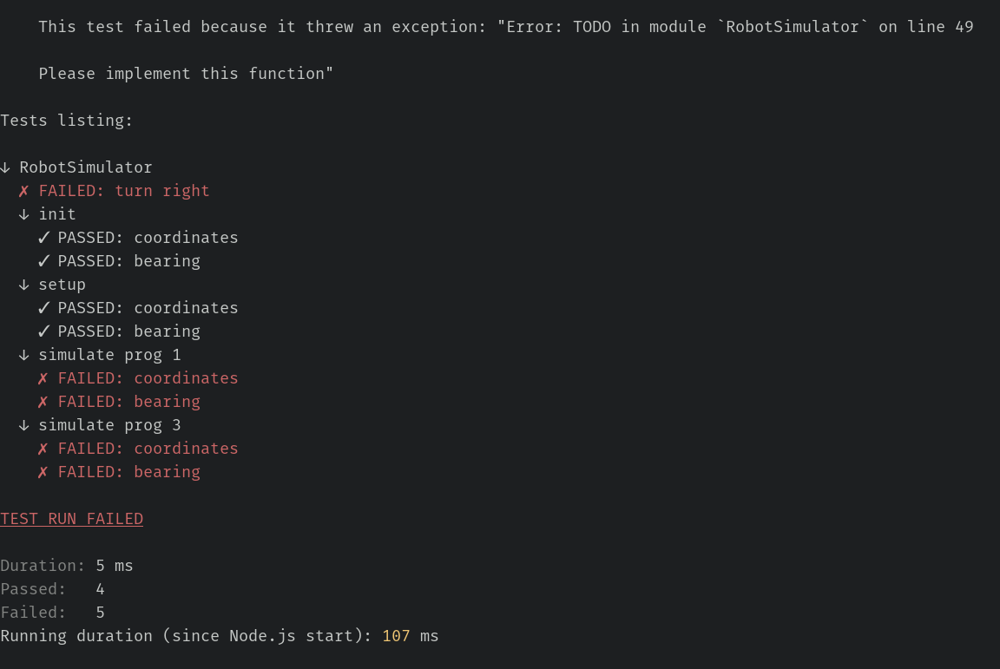
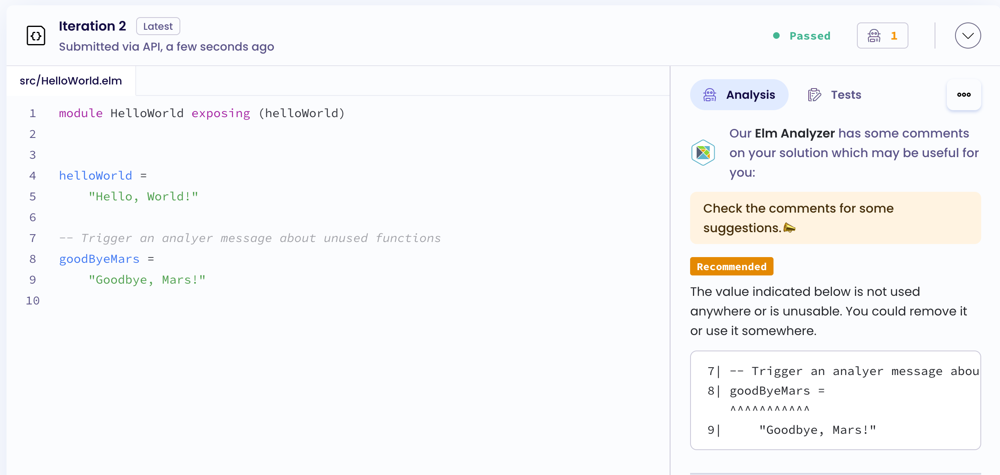
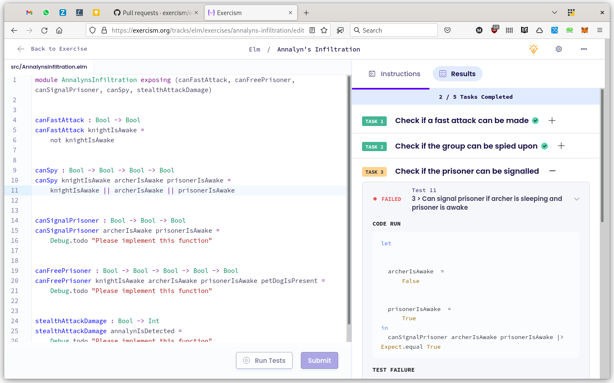

I have a few exciting news to share related to those things I'm involved in.
TLDR:
- New version of elm-test on master (not published yet) with compatibility with lamdera
- New version of elm-test-rs that can print a list of all tests run
- The elm track on exercism now has tests grouped by tasks, and an analyzer activated on all exercises, powered by elm-review
elm-test compatibility with lamdera
Lamdera is very interesting platform for full stack elm apps, but since it's core packages are different than the core elm packages, this was causing an issue with how elm-test was resolving test dependencies. There is now a new approach for the dependency solver of elm-test, that is compatible with lamdera! Many thanks to @harrysarson , @lydell and @avh4 for the help!
But since the whole solver was change, we would love feedback from the community to make sure we didn't break your tests. If you can, don't hesitate to try out the master branch of elm-test.
elm-test-rs v2.0.1 with a tests listing
The new version of elm-test-rs v2.0.1 now prints a list of all tests that were run when using the verbose -v command line argument. Thanks all who participated in the survey. And thanks @Augustin82 for the feature idea, discussions and PoC.

exercism elm track now has an analyzer
Exercism is a community-run learning platform where people can learn and mentor. The elm track now takes advantage of @jfmengels fabulous elm-review to provide automatic feedback to students in addition to the human mentoring they can get.

And the updates on the --report exercism in addition to changes in the elm track repo also enables grouping of tests by tasks!

Thanks a lot @jiegillet and @ceddlyburge for your work on this!